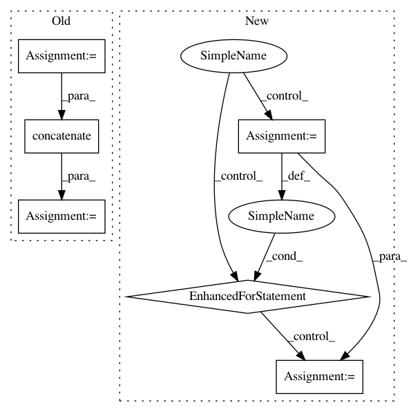

929cf0a4890e418ecec0b000ed7fefa2372bc082,GPy/core/gp.py,GP,predict_jacobian,#GP#Any#Any#Any#,314
Before Change
return var_jac
if self.posterior.woodbury_inv.ndim == 3:
var_jac = []
for d in range(self.posterior.woodbury_inv.shape[2]):
var_jac.append(compute_cov_inner(self.posterior.woodbury_inv[:, :, d]))
var_jac = np.concatenate(var_jac)
else:
var_jac = compute_cov_inner(self.posterior.woodbury_inv)
return mean_jac, var_jac
After Change
return var_jac
if self.posterior.woodbury_inv.ndim == 3: // Missing data:
if full_cov:
var_jac = np.empty((Xnew.shape[0],Xnew.shape[0],Xnew.shape[1],self.output_dim))
for d in range(self.posterior.woodbury_inv.shape[2]):
var_jac[:, :, :, d] = compute_cov_inner(self.posterior.woodbury_inv[:, :, d])
else:
var_jac = np.empty((Xnew.shape[0],Xnew.shape[1],self.output_dim))
for d in range(self.posterior.woodbury_inv.shape[2]):
var_jac[:, :, d] = compute_cov_inner(self.posterior.woodbury_inv[:, :, d])
else:
var_jac = compute_cov_inner(self.posterior.woodbury_inv)
return mean_jac, var_jac
In pattern: SUPERPATTERN
Frequency: 3
Non-data size: 6
Instances
Project Name: SheffieldML/GPy
Commit Name: 929cf0a4890e418ecec0b000ed7fefa2372bc082
Time: 2015-09-07
Author: ibinbei@gmail.com
File Name: GPy/core/gp.py
Class Name: GP
Method Name: predict_jacobian
Project Name: jonathf/chaospy
Commit Name: d65cddeddda46bb20f82b1e233cd5305ace7b1c7
Time: 2019-12-29
Author: jonathf@gmail.com
File Name: chaospy/descriptives/conditional.py
Class Name:
Method Name: E_cond
Project Name: NifTK/NiftyNet
Commit Name: 5af1994def9a52fe1ffd2847b2519f1e27cfbc64
Time: 2017-08-12
Author: wenqi.li@ucl.ac.uk
File Name: niftynet/io/misc_io.py
Class Name:
Method Name: do_resampling